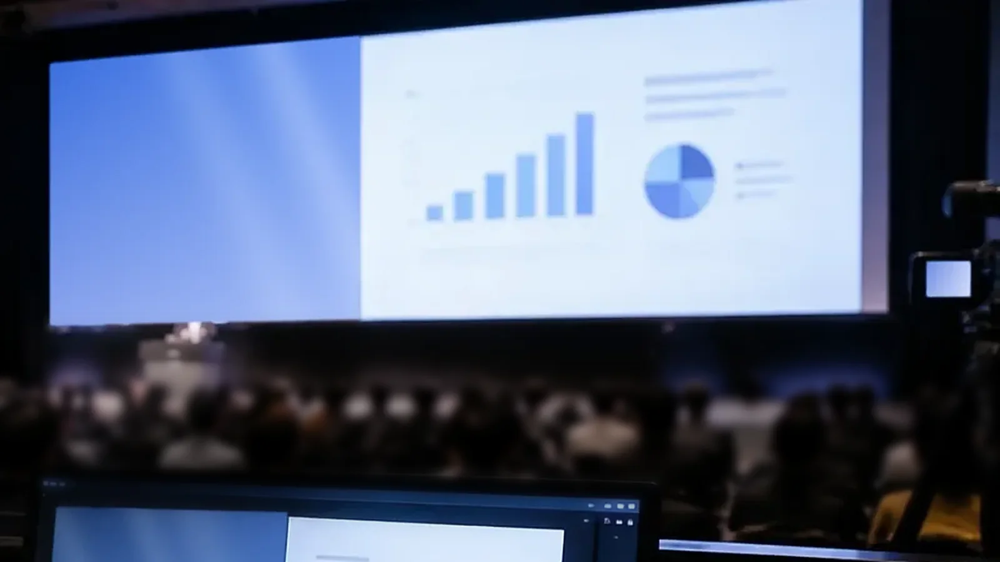

発表資料
資料を、大きく。
会場では登壇者やステージも直接見られます。客席から資料の文字が読めるかを確かめます。
LOTUS VISUAL JOURNAL / PLANNING
同じ発表でも、見えているものは違う。
二つの画面を考えると、必要な準備が見えてきます。

会場では登壇者やステージも直接見られます。客席から資料の文字が読めるかを確かめます。
配信では画面の中が主役。資料と表情を組み合わせ、スマートフォンでも読みやすく整えます。
01 / VIEWPOINT
客席ではステージ全体や登壇者の動きが見えます。一方、オンラインでは配信に載せた映像と音が中心です。会場スクリーンをそのまま配信する前に、それぞれの場所で何が見えているかを整理します。常に違う映像にする必要はなく、伝えたい内容に応じて送り分けます。
発表では資料を大きく、対談では話している人を中心に。小窓を足して資料が読みにくくならないよう、客席と視聴端末の両方で確かめます。
02 / OUTPUT
同じ映像を複数の画面へ送ることと、送り先ごとに映像の配置を変えることは別です。必要なのは、どの映像を組み合わせ、どこへ送るかという整理です。
例えばRoland VR-120HDには、PROGRAM・SUB-PROGRAM・AUXなどの映像の送り分けがあります。ただし、出力口の数だけ独立した合成画面が作れるわけではありません。機種・ソフトウェアのバージョンと、必要な構成を合わせて選びます。
VR-120HDの役割を見る ↗03 / CUE
会場には再開時刻、配信には待機画面を出す、といった分け方もあります。「次に何を出すか」「誰の合図で切り替えるか」を進行表へ添えると、確認する場面が明確になります。
音声も別に整理します。会場のスピーカーと配信へ何を送るかを音響担当者と共有し、リハーサルで両方を確認します。
START WITH TWO SCREENS
機種が決まっていなくても大丈夫です。「会場にはこれ、配信にはこれ」というラフから、素材・機材・操作の担当範囲を整理できます。
機材機能の参考：Roland VR-120HD 公式製品情報 ↗。確認日：2026年11月2日。画面構成は当サイトの提案例で、すべての機材で同じ構成を実現できるとは限りません。